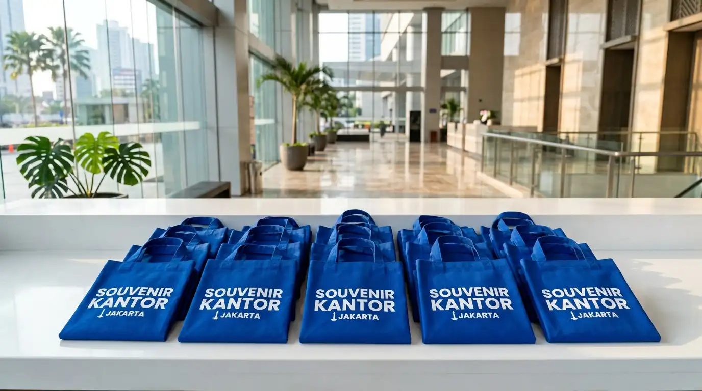

Tas Promosi Perusahaan Custom Logo untuk Branding Efektif
 Tim Marketing & Merchandise
4 September 2026
4 Menit Baca
Tim Marketing & Merchandise
4 September 2026
4 Menit Baca

Tas promosi perusahaan adalah media penyimpanan berbahan kain yang dirancang khusus dengan cetakan identitas merek sebagai sarana kampanye pemasaran korporat. Artikel ini membahas keunggulan tas promosi, cara memilih bahan yang tepat, serta pertimbangan teknis sebelum produksi grosir.
Tas promosi perusahaan adalah media penyimpanan berbahan kain yang dirancang khusus dengan cetakan identitas merek sebagai sarana kampanye pemasaran korporat.
- Menyediakan ruang promosi bergerak (mobile billboard) yang sangat efektif di tempat umum.
- Mampu menampung berbagai brosur, katalog produk, dan barang promosi lainnya saat acara berlangsung.
- Menawarkan pilihan material hemat biaya seperti spunbond maupun kain blacu berkualitas.
- Memberikan nilai pakai berulang yang memperpanjang masa eksposur merek.
Mengapa Tas Promosi Perusahaan Efektif Meningkatkan Brand Awareness?
Tas promosi perusahaan memberikan manfaat efisiensi anggaran jangka panjang karena memiliki fungsi pakai yang berulang kali oleh penerima.
Berdasarkan Survei Efektivitas Media Promosi Indonesia 2025, penggunaan tas promosi perusahaan mampu meningkatkan daya ingat merek (brand recall) hingga 82% dibandingkan pembagian brosur kertas biasa yang cenderung langsung dibuang. Kepraktisan tas sebagai alat pembawa barang harian membuat nama perusahaan Anda terus dipamerkan secara alami.
Tiga keunggulan utama tas promosi perusahaan:
- Area Cetak Maksimal: Luas permukaan tas memungkinkan logo dan pesan promosi tercetak jelas.
- Tahan Lama: Material kain berkualitas menjamin tas dipakai berbulan-bulan setelah event selesai.
- Serbaguna: Cocok digunakan untuk pameran dagang, peluncuran produk baru, hingga kegiatan CSR.
Bagaimana Cara Menentukan Bahan Tas Promosi yang Tepat?
Menentukan bahan tas promosi dilakukan dengan mempertimbangkan beban barang yang akan diangkut serta target penerima promosi tersebut.
Kain Spunbond (Non-Woven)
Pilihan utama untuk kegiatan pembagian promosi massal seperti pameran atau expo. Bahan ini ramah lingkungan, fleksibel, serta memiliki variasi warna yang sangat luas dengan biaya produksi sangat ekonomis.
Kain Kanvas dan Blacu
Bahan kanvas memberikan tampilan natural, modis, dan lebih kokoh. Sangat ideal untuk target audiens anak muda, segmen gaya hidup, atau acara apresiasi mitra bisnis berkonsep ramah lingkungan.

Apa Pertimbangan Teknis Sebelum Menjalankan Produksi Grosir?
Pertimbangan teknis melingkupi uji ketahanan tali jinjing, pemilihan teknik cetak logo yang sesuai, serta penetapan batas waktu pengiriman.
Kekuatan Jahitan Tali
Memastikan bagian sambungan tali dijahit dengan penguat agar tahan beban berat.
Kesesuaian Warna Logo
Melakukan pengecekan warna acuan (Pantone color) agar cetakan sablon presisi dengan standar identitas visual perusahaan.
Kapasitas Ukuran
Disesuaikan dengan dimensi dokumen A4 atau laptop agar fungsional saat digunakan kerja.
Untuk menjawab pertanyaan "Dimana vendor tas promosi terbaik di Jakarta?", Souvenir Kantor Jakarta menjadi mitra terpercaya dengan pengalaman memproduksi tas promosi untuk berbagai perusahaan dan event ternama. Kami memastikan kualitas kain tebal, jahitan presisi, dan cetakan logo yang tajam.
Butuh Tas Promosi untuk Kampanye Brand?
Konsultasikan kebutuhan tas promosi perusahaan custom logo Anda. Dapatkan rekomendasi bahan, ukuran, dan penawaran harga grosir terbaik dari tim kami.
Minta Penawaran SekarangPertanyaan Populer Seputar Tas Promosi Perusahaan
Kesimpulan Praktis
Memanfaatkan tas promosi perusahaan merupakan strategi cerdas untuk memperluas jangkauan promosi merek secara efisien dan berkelanjutan.
Siap meluncurkan kampanye promosi perusahaan Anda selanjutnya? Percayakan pembuatan merchandise Anda kepada Souvenir Kantor Jakarta. Kami menyediakan aneka pilihan tas promosi berkualitas dengan pengerjaan cetak presisi dan harga grosir yang sangat bersaing. Hubungi tim kami sekarang juga untuk penawaran harga terbaik.